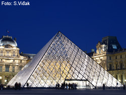

Pariz

Putovanje u Pariz poseban je do�ivljaj: �iroke avenije i gorostasni Tour Eiffel, Katedrala Notre Dame i prostrani gradski trgovi, Uli�ni slikari, izvrsna vina, najbolje svjetske parfumerije Grad mode i umjetnosti, romanti�nih �etnji uz Seinu �armer kojeg se ne zaboravlja � Paris!
PUTOVANJE U PARIZ IZ SPLITA, �IBENIKA, ZADRA
Putovanje u Pariz iz Splita i Zadra
1) nedjelja 06/10/2013 SPLIT � PARIZ Okupljanje skupine za putovanje u Pariz u 04:45 sati u zra�noj luci Zadar. Prijava na let Zadar-Paris/Beauvais. Let 0615/0820. Grani�ne formalnosti, preuzimanje prtljage, te ukrcaj u autobus. Na�e putovanje u Pariz po�et �emo panoramskom vo�njom u pratnji vodi�a: Slavoluk pobjede, Trocadero, Palais Chaillot, Tour Eiffel, Champs de Mars, Kraljevska vojna akademja, Hotel des Invalides, Place de la Concorde, Louvre, Hotel de Ville. Tijekom panoramske vo�nje napravit �emo stanku za ru�ak. Nakon panoramske vo�nje odlazimo u hotel � smje�taj u sobe i odmor. Ranije nave�er odlazimo do stanice podzemne �eljeznice, uz asistenciju vodi�a pribavljamo karte i upoznajemo se s na�inom kori�tenja javnog prijevoza. Odlazak do Latinske �etvrti i slobodno vrijeme. No�enje #1.
Putovanje u Pariz iz Splita i Zadra
2) ponedjeljak 07/10/2013 PARIZ Tour Eiffel, Seine, Montmartre Doru�ak i raniji polazak. Jutro predvi�eno za posjet Tour Eiffel i uspon na najvi�u gra�evinu u Parizu. Karte se kupuju na licu mjesta, za jednu od eta�a (1., 2. ili 3.) i neminovno je �ekanje u redovima � tri sata su dovoljna za pribaviti karte, uspeti se na sve eta�e i zavr�iti posjet. Slijedi fakultativna plovidba po rijeci Seine. Ne propustite upoznati grad plove�i po njegovoj �ili kucavici, rijeci koja ga je obilje�ila i stolje�ima bila njegova glavna prometnica, a pogled na grad s rijeke je nezaboravan. Nakon slobodnog vremena za ru�ak zajedni�ki odlazak na bre�uljak Montmartre. Ovo je legendarno mjesto na kojem se jo� uvijek osje�a duh boema koji su ovdje �ivjeli i stvarali. �etnja do crkve Presvetog srca Isusovog (Sacre Coeur), Place du Tertre, te niz ulicu Rue Lepic do Moulin Rouge. No�enje #2.
Putovanje u Pariz iz Splita i Zadra
3) utorak 08/10/2013 PARIZ Ille de la Cit�, Lijeva obala, d'Orsay, Opera Garnier Doru�ak. Odlazak u sredi�te grada i obilazak otoka Ille-de-la-Cit�, kamene koljevke Pariza. Obilazak Notre-Dame, Sainte-Chapelle (ulaznica na licu mjesta) gdje se nalaze najljep�i vitraji na svijetu. Ovo �udesno mjesto je mo�da vrhunac goti�kog na�ina gradnje. Slijedi �etnja Lijevom obalom: Latinska �etvrt, Sorbonne, Luksembur�ka pala�a i vrtovi, Pantheon, Saint Etienne du Mont, St-Sulpice, St-Germain-des-Pres i slavne kavane Les Deux Magots, Les Flores. U poslijepodnevnim satima posjet najve�em svjetskom muzeju Impresionizma: Musee d'Orsay. Posebno je zanimljiva kolekcija na zadnjem katu (Manet, van Gogh, Renoir, Monet, � ). Za kraj dana preporu�amo odlazak do Opera Garnier (koju mo�ete obi�i iznutra), te Galerie Laffayette (legendarne robne ku�e). No�enje #3.
Putovanje u Pariz iz Splita i Zadra
4) srijeda 09/10/2013 PARIZ Louvre, Beaubourg, Marais, Bastille Doru�ak. Putovanje u Pariz nas dovodi do dana kada �emo razotkriti kultno mjesto svjetske umjetnosti u srcu grada Pariza. �etnja do Place du Vert Gallant, Pont des Artes, crkve Saint-Germain les Auxerrois, Palais Royale, Comedie Francais. Slijedi ulazak u Musee du Louvre � obilazak zbirke najve�eg svjetskog muzeja. Na�ite se o�i u o�i s enigmati�nom Mona Lisom, Milonskom Venerom i Nikom sa Samotrake. Ne izostavite obi�i Michelangelove robove, Caravaggiovu Smrt Djevice, i brojna druga djela velikana svjetske povijesti umjetnosti. Impresivna je i zbirka Egipatske umjetnosti koja nas vodi u drevni svijet faraona, mumija i �udnih pogrebnih rituala! Ako vi�e volite noviju pro�lost � apartmani Napoleona III su za Vas! Potpuno o�uvani ba� kao u vrijeme kada je on �ivio ovdje. Putovanje u Pariz bez posjeta Louvrea bilo bi kao posjet riznici bez da razgledate njene najljep�e dragulje! (ru�ak je mogu� unutar muzeja). U poslijepodnevnim satima upoznajemo Desnu obalu (Rive Droite): Les Halles, crkva Sainte Eustache, ulica Montorgueil, Centre Georges Pompidou, ulica Ru�i�njaka (�idovska �etvrt), Muzej grada Carnavalet, Place des Vosges, Place Bastille s Operom Bastille. Ovo popodne na�eg putovanja u Pariz otkriva du�u gra�anskog Pariza, koji je za razliku od �aristokratske� lijeve obale uvijek bio revolucionaran, snala�ljiv u trgovini iako ne i obdaren povlasticama. Danas je �etvrt Marais najtra�enija gradska �etvrt za stanovanje. Slobodna ve�er. No�enje #4.
Putovanje u Pariz iz Splita i Zadra
5) �etvrtak 10/10/2013 PARIZ Giverny, Auvers sur Oise Doru�ak i slobodan dan u Parizu ili fakultativni izlet Tragom Impresionista. Posjetit �emo Giverny, gradi� u kojemu je ku�a i vrt Claude Monet-a. Slikar je ovdje nalazio svoju inspiraciju i slikao, ovdje je i odr�avao svoj vrt �iji su prizori prona�li put do njegovih platana. Nakon posjeta Givernyju odlazimo do gradi�a Auvers sur Oise. Ovdje su �ivjeli brojni slikari, C�zanne, Daubigny, Pissarro, Corot, i naravno Vincent van Gogh. Van Gogh preselio se ovamo zbog doktora Paul Gachet-a kod kojega je dolazio na terapije. Borave�i ovdje do svoje smrti naslikao je nekoliko slavnih slika, a portret Dr. Gachet prodan je 1990. na jednoj aukciji za 80 milijuna dolara. Obilazimo mjesta vezana za Vincent van Gogh-a. Slobodno vrijeme i povratak u hotel. No�enje #4.
Putovanje u Pariz iz Splita i Zadra
6) petak 11/10/2013 PARIZ Versailles Doru�ak i slobodan dan u Parizu ili fakultativni izlet u Versailles. Putovanje u Pariz uvijek podrazumijeva i posjet ovog veli�anstvenog dvorca koji je postao simbolom grada iako je 30ak km udaljen od njega. Obilazak unutra�njosti najve�eg europskog dvorca kojeg je za svoje duge vladavine dao sagraditi Kralj Sunce, Louis XIV. Slobodno vrijeme za fotografiranje ili posjet vrtovima, te �etnju do gradske tr�nice u blizini koje su brojni restorani, kavane, slasti�arnice. Povratak u Pariz popodne. Slobodno vrijeme. No�enje #5.
Putovanje u Pariz iz Splita i Zadra
7) subota 12/10/2013 PARIZ � ZADAR / SPLIT Doru�ak i odjava iz hotelskih soba (vodi� �e vas obavijestiti o to�noj satnici okupljanja s prtljagom na recepciji � prtljagu �emo deponirati u sobu za prtljagu kao grupa u isto vrijeme). Slobodno vrijeme u Parizu za individualne programe. Ponovno okupljanje na recepciji hotela u 17 sati. Transfer do zra�ne luke (uklju�en u cijenu aran�mana). Prijava na let, grani�ne formalnosti. Let Paris Beauvais � Zadar 20:55h/22:55h. Na�e putovanje u Pariz zavr�ava.